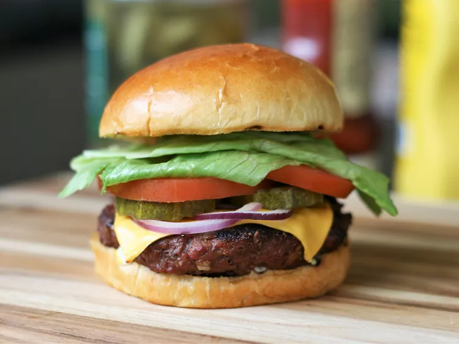

Ingredients
- 2 pound extra lean ground beef
- 1 (1 ounce) package dry onion soup mix
- 1 egg, lightly beaten
- 2 teaspoon hot pepper sauce
- 2 teaspoon worcestershire sauce
- ¼ teaspoon ground black pepper
- ¾ cup rolled oats
Description
A hamburger, often known as a burger, consists of fillings—usually a patty of ground meat, typically beef—placed inside a sliced bun, sesame seed bun, or bread roll. These patties are often served with lettuce, tomato, onion, pickles, bacon, or chilis. The filling of the burger can be topped with condiments such as ketchup, mustard, mayonnaise, relish or a "special sauce", often a variation of Thousand Island dressing. A burger with the patty topped with cheese is called a cheeseburger.
Steps
- Preheat an outdoor grill for medium high heat and lightly oil grate.
- In a large bowl, combine the beef, onion soup mix, egg, hot sauce and oats. Shape into 6 patties.
- Grill patties over medium high heat for 10 to 20 minutes, or to desired doneness.